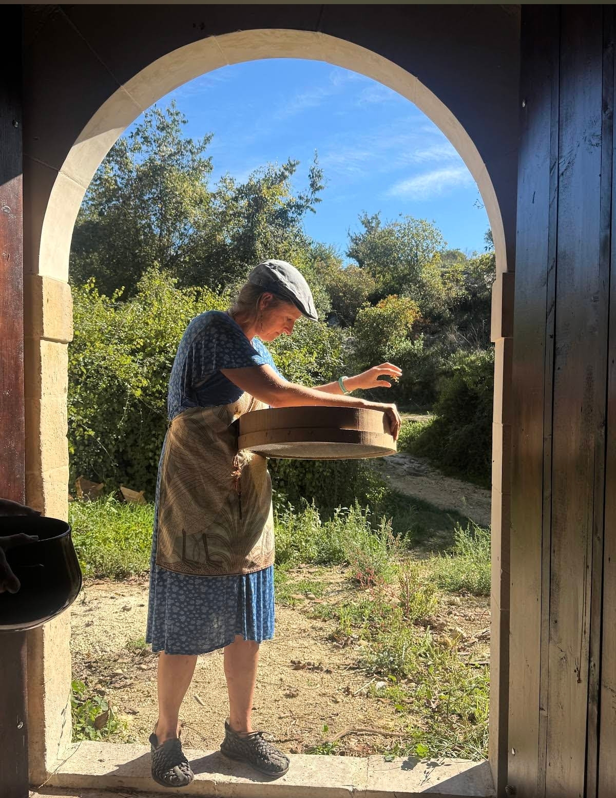

LA FILIERA
Quattro passaggi, un solo chicco.
Ogni passaggio viene mostrato e spiegato qui, con gli attrezzi e le macchine originali, perché i visitatori vedano come il grano diventa farina.
01IL CAMPO
Il grano duro si semina in autunno e si raccoglie all'inizio dell'estate, quando le spighe diventano d'oro.

02LA PULITURA
Il pulitore gira e setaccia il grano, togliendo polvere, semi e piccole pietre.

03LA MACINATURA
Così si macinava il grano: lentamente, tra due macine di granito, conservando germe, sapore e profumo.

04LA SETACCIATURA
Lo sfarinato veniva poi setacciato a mano: la semola fine da una parte, la crusca dall'altra.

LA CRUSCA
Non si spreca niente.
Quello che il setaccio trattiene, la crusca, torna alla terra: agli animali e al suolo.